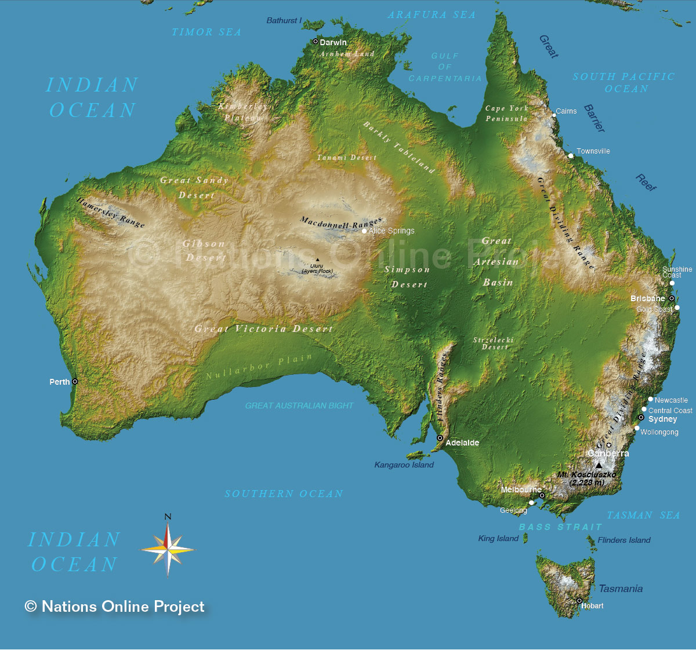

El maravillo mundo de australia y sus canguros y su variante clima

El país ocupa la principal masa continental de la plataforma llamada Sahul, además de algunas islas en los océanos Pacífico, Índico y Antártico. Los países más cercanos a Australia son Indonesia, Timor Oriental y Papúa Nueva Guinea...
READ MORE